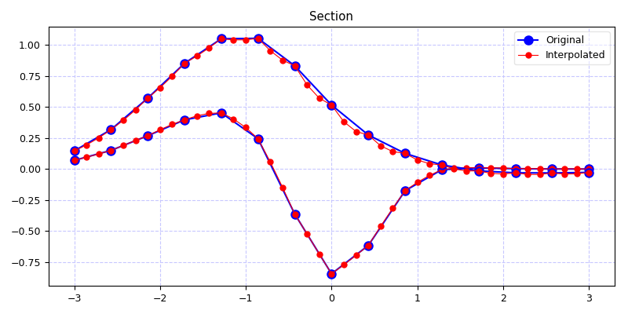
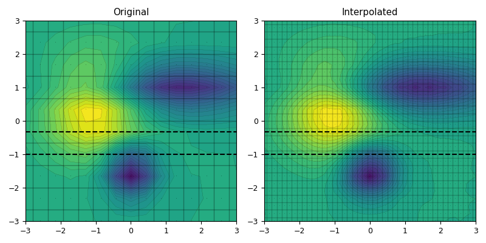

3.5.6.29. test_regrid_kriging_regrid.py – Test function krig() for grid refinement¶


"""Test function :func:`~vacumm.misc.grid.kriging.krig` for grid refinement"""
nxi = 15
nyi = 10
r = 3
from vcmq import P, savefigs, code_file_name, N, auto_scale, add_grid
from vacumm.misc.grid.kriging import gridded_gauss3, random_gauss3, random_points, krig
# Generate random gridded field
xi, yi, zzi = gridded_gauss3(nx=nxi, ny=nyi)
xxi, yyi = N.meshgrid(xi, yi)
# Refined grid
xo = N.linspace(xi[0], xi[-1], (nxi-1)*r+1)
yo = N.linspace(yi[0], yi[-1], (nyi-1)*r+1)
xxo, yyo = N.meshgrid(xo, yo)
# Interpolate
zzo = krig(xxi.ravel(), yyi.ravel(), zzi.ravel(), xxo.ravel(), yyo.ravel())
zzo.shape = xxo.shape
# Section
P.figure(figsize=(8, 4))
iyis = [3, 4]
for iyi in iyis:
label = iyi==iyis[0]
P.plot(xi, zzi[iyi], 'ob-', markersize=8, label='Original' if label else None)
P.plot(xo, zzo[iyi*r], 'or-', markersize=5, lw=.8, label='Interpolated' if label else None)
P.legend(loc='best', framealpha=0.5)
P.grid()
P.title('Section')
P.tight_layout()
savefigs(code_file_name(ext='_0.png'), verbose=False, pdf=True)
# Maps
P.figure(figsize=(8, 4))
levels = auto_scale(vmin=zzi.min(), vmax=zzi.max(), nmax=30)
P.subplot(121)
P.contourf(xxi, yyi, zzi, levels=levels)
P.contour(xxi, yyi, zzi, linewidths=0.1, levels=levels, colors='k')
add_grid((xxi, yyi), alpha=.3, centers=True)
for iyi in iyis:
P.axhline(yi[iyi], linestyle='--', color='k')
P.title('Original')
P.subplot(122)
P.contourf(xxo, yyo, zzo, levels=levels)
P.contour(xxo, yyo, zzo, linewidths=0.1, levels=levels, colors='k')
add_grid((xxo, yyo), alpha=.2, centers=True)
for iyi in iyis:
P.axhline(yi[iyi], linestyle='--', color='k')
P.title('Interpolated')
P.tight_layout()
savefigs(code_file_name(ext='_1.png'), verbose=False, pdf=True)
P.close()